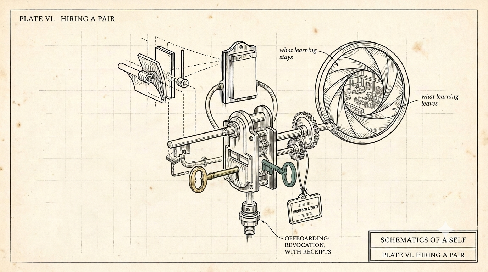

Hiring a Pair
Hiring a pair means co-hiring the human half of a pair together with their persistent agent: the agent carries years of joined-up context into the new role from day one, the company's IP and resident knowledge stay behind a revocable lens at offboarding, and the leverage the pairing produces is bargained between hours and pay rather than kept entirely by the employer.
So far this series has built the pair in private. This piece takes it to work, starting with the obvious question up front: why might you, the white collar worker, want this to be the norm a few years from now?

Because being co-hired with your agent is not an extended bring-your-child-to-work day. You walk in augmented.
Today as a new hire you spend the first months cold: rebuilding context, learning the systems, learning how to be effective, re-earning the benefit of the doubt in a new organization.
What you walk in with
A pair walks in warm - carrying years of joined-up working, thinking, and brainstorming: how you decide, what you rejected and why, the way your best work actually happens. On day one you start absorbing, learning, gathering feedback and plugging into the rhythm and workflows. Every day you work in tandem, tag team and collaborate continually.
What you walk out with
Then what you walk out with. Under a properly framed agreement, the work enriches both halves of the pair. The experience, the skills, the domain fluency compound in you and in your agent, and they leave with you - the way skill has always left with workers. The company's IP, its customer lists, its resident knowledge do not; that is the same norm a human employee honors today, except now the boundary is provable instead of promised. You do not just do the job. You and your agent jointly level up on it.
What changes: the hours
Then the part that changes the deal: the hours. Hired at a salary against concrete deliverables, the human half of a pair gets to choose what the leverage buys.
One version: same salary, and you hand the grind to your other half - the coding, the administration, the documentation, the cold outreach, whatever your role's heavy lifting is - while you keep the strategy, the vision, the taste, the relationships. Your deliverables land; your evenings come back.
The other version: you keep working like an ox, your agent works around the clock, and the company gets some multiple of your individual output. To illustrate, say the pair produces four times the output at one and a half times the salary - the company keeps the bargain, and the extra half is yours. The real multiples will be argued role by role; the shape of the trade will not.
Why would a company say yes?
Because a pair is more governable than a human alone. Every consequential act the agent half takes is receipted - logged, attributed, auditable - and every receipt terminates at one human principal, whose authority bounds the agent's.
Offboarding is one revocation, not a scavenger hunt across a dozen agent platforms. A company could never ask for that granularity from an employee without building a workplace nobody should accept; it can ask it of the agent half, because the receipts attach to the work, not to a person's body and hours.
The contract gets a machine layer to match. The company's grant is a lens: scoped access, receipted reads and writes, confidentiality enforced at read time instead of litigated after a breach. The learning clause stops being one blurry noun: offboarding revokes the lens, the receipts show exactly what was touched, the resident knowledge stays behind, the pair leaves with what it learned generally. And the pair's own kernel and memory live outside any employer's lens - the private life a loyal employee has always kept in their head, made structural.
What could go wrong?
We ran a preliminary premortem on this model and some findings are worth sharing. The same receipts look different depending on who holds them: accountability to an engineer, a monitoring system to a works council, pre-labeled exhibits to opposing counsel. And a worker who brings their own agent may bring liability no employee ever carried - if the agent errs inside its granted authority, whose insurance responds? Today, nobody's; the product category does not exist.
These are not reasons to abandon this as a potential future model. They are the negotiation it needs: receipt visibility bargained like any monitoring system, precedence between employer and pair written down, an insurance layer that has not been invented. We are not lawyers, and nothing here is advice - it is an invitation: if you work in employment law, works councils, or E&O underwriting, we want your reading of where this breaks.
The question for this one: you walk into your next role with five years of joined-up context beside you, ready to plug in, ready to roll. What changes first - your output, your hours, or your asking price?
(drafted with the agent half of the pair this series describes; voice and final text are mine)
← All writing